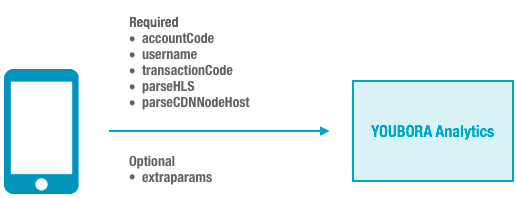

Run-time Flow During Playback
During playback, a playback event
triggers notification about the event to YOUBORA Analytics.

Supported Players
The Player V4 YOUBORA Analytics plugin supports integrating YOUBORA Analytics with the Ooyala HTML5 web player versions 4.6.9 and above.
Prerequisites
Before you enable the Ooyala QoS Solution powered by
YOUBORA, you must have a customer relationship with
NPAW with
an account for YOUBORA.
Requirements
If you want to track bitrate information for analytics purposes, you must use one of the following video plugins:
- Bitmovin plugin for DASH and HLS (bit_wrapper.min.js) (except HLS HTML5 in Safari)
- Akamai HD video plugin for Akamai packaged HDS (akamaiHD_flash.min.js)
Note: The Akamai HD Video Plugin for Akamai Packaged HDS for Player
V4 has been deprecated and is scheduled to be disabled. For details and alternatives, see the
OVP Release Notes.
- OSMF Flash plugin for HDS (osmf_flash.min.js)
Note: The OSMF Flash Video Plugin for HDS for Player V4 has been
deprecated and is scheduled to be disabled. For details and alternatives, see the
OVP Release Notes.
The HLS and MP4 Main video plugin (
main_html5.min.js) does not report bitrate information.
Step 1: Load the YOUBORA Plugin
To add the YOUBORA
plugin to your player, use one of the following URLs to load the plugin (in addition to
the player files):
- http://smartplugin.youbora.com/v5/javascript/ooyalav4/stable/sp.min.js
- https://smartplugin.youbora.com/v5/javascript/ooyalav4/stable/sp.min.js
Because NPAW maintains the YOUBORA Analytics plugin for Player V4, use one of
these links to load the latest version.
Note: Unlike other Player V4 plugins, it is not
recommended that you try to host this plugin yourself.
Here are some examples
of how to load this in the
<head> section of your web page:
| How to Load Using |
Example |
| Hardcoded HTTP |
<script src="http://smartplugin.youbora.com/v6/js/adapters/ooyala/6.2.3/sp.min.js"></script>
|
| Hardcoded HTTPS |
<script src="https://smartplugin.youbora.com/v6/js/adapters/ooyala/6.2.3/sp.min.js"></script>
|
| Protocol of the page from which it is being called |
<script src="//smartplugin.youbora.com/v6/js/adapters/ooyala/6.2.3/sp.min.js"></script>
|
Step 2: Specify Page-level Parameters
As with other Player V4
plugins, you must specify the YOUBORA parameters within the
playerparams variable that is passed in during player creation
(see
Page-level Parameters for Player V4):
var playerParams = {
"youbora": {
// accountCode is required
"accountCode": "myCode",
// other optional YOUBORA params
}
}
OO.ready(function() {
window.pp = OO.Player.create('playerDiv', 'myVideoEmbedCode', playerParams);
}
You can specify the following parameters. Refer to the
YOUBORA product
documentation for additional information about each parameter.
| Parameter |
Data Type |
Description |
| accountCode |
{string} |
Required. Provided by NicePeopleAtWork. Specifies to YOUBORA
Analytics the customer account to which the data is sent. |
| username |
{string} |
User account associated with your system. Used to identify your
users within YOUBORA Analytics. For details, see the YOUBORA product documentation. |
| content.transactionCode |
{string} |
Specifies to YOUBORA Analytics a transaction code. This is a
general purpose string that can be used to filter users when sorting
through collected data on the YOUBORA Analytics platform. Typically,
NPAW recommends using a parameter the customer can correlate with
its content management system (CMS) or paid transactions. Examples:
purchaseCode, sessionCode, and so on. For details, see the YOUBORA product documentation. |
| parse.HLS |
{boolean} |
Configures YOUBORA's parsing HLS algorithm. One of the following
values:
- parse.HLS = true enables the parsing HLS
algorithm
- parse.HLS = false disables the parsing HLS
algorithm
For details, see the YOUBORA product documentation. |
| parse.cdnNode |
{boolean} |
Configures YOUBORA's CDN Node detection. One of the following
values:
- parse.cdnNode = true enables CDN Node
detection
- parse.cdnNode = false disables CDN Node
detection
For details, see the YOUBORA product documentation. |
| extraparams |
{object} |
Supplemental, custom parameters to pass into the plugin to help
with filtering the gathered data in YOUBORA Analytics. You can
specify up to ten parameters using the keyname pattern paramN, where
N is a number 1 - 20. The values represent the data that you want to
sent to YOUBORA. On YOUBORA's site, you map what each key means (for
example, extraparam1 means one thing, extraparam2 means something
else, and so on).
extraparam.1:'param1',
extraparam.2:'param2',
extraparam.3:'param3',
//Up to 20
For details, see the YOUBORA product documentation. |
Example
<html>
<head>
<title>NPAW YOUBORA Example</title>
<!-- V4 JS core is required. Plugins such as skin, discovery and Advertising need to be loaded separately -->
<script src="url_where_hosted/core.min.js"></script>
<script src="url_where_hosted/html5-skin.min.js"></script>
<link rel="stylesheet" href="url_where_hosted/html5-skin.min.css" />
<!-- A Video Plugin is required. This example shows the Bitmovin Plugin -->
<script src="url_where_hosted/bit_wrapper.min.js"></script>
<!-- YOUBORA plugin -->
<script src="//smartplugin.youbora.com/v6/js/adapters/ooyala/6.2.0/sp.min.js"></script>
</head>
<body>
<div id="container" style="width:640px; height:360px;"></div>
<script>
var playerParam = {
debug:true,
"pcode": "YOUR_PCODE",
"playerBrandingId": "YOUR_PLAYER_ID",
"skin": {
// Config contains the configuration setting for player skin. Change to your local config when necessary.
"config": "//player.ooyala.com/static/v4/candidate/latest/skin-plugin/skin.json",
},
"youbora"
"accountCode":"YOUR_ACCOUNT_CODE",
"username": "user1",
"content.transactionCode": "payingCustomer",
"parse.HLS" false,
"parse.cdnNode" false,
"extraparam.1":"myData1",
"extraparam.2":"myData2"
}
};
OO.ready(function() {
window.pp = OO.Player.create("container", "YOUR_ASSET_ID", playerParam);
});
</script>
</body>
</html>